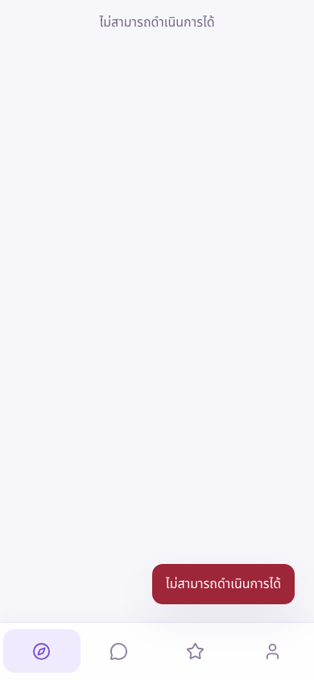
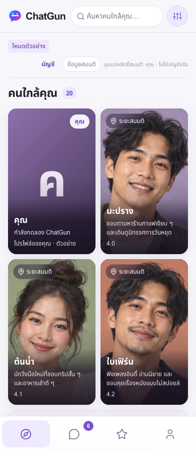

Live domain: https://chatgun.social. Verified 18 October 2026, Asia/Bangkok. This is an access recovery, not a declaration of healthy live authentication or social services.
Deployed runtime: bb44dd90557da89f7dc5f6ff0ec81fcfda53ce6b
Cloudflare deployment: 2741dd5c-10fd-47ba-88ec-2f808acc6db4.
The homepage and JavaScript assets returned 200, but both /api/social/config and /api/auth/config returned static HTML 404 responses instead of JSON. Application initialization awaited the social configuration endpoint and failed before calling startDemo() or reading the saved demo. Fresh Chromium and the owner's existing Chrome tab displayed “ไม่สามารถดำเนินการได้”. No JavaScript syntax exception or saved-data compatibility failure was reproduced.
The Pages API reported a successful deployment and registered Functions routes. Recent immutable deployments and the isolated Preview also returned API 404s. The underlying Cloudflare reason for these responses is not yet established; quota exhaustion, a billing problem, and a platform outage are not confirmed diagnoses. Historical Pages invocation analytics alone cannot establish current routing health. A blocked Cloudflare analytics beacon was also observed under the existing CSP; it was not the application startup dependency and CSP was not weakened.
23017b53386fb67fc62a52cdd017454c, active custom domain, separate Production/Preview databases, no Production R2 binding, closed real-service flags, and foreign-key integrity using read-only checks.a555e05 to previously verified d9a11c52722175b93236f8e09e74928430013fba, deployment 3e111666-ad69-49ba-91ca-d2495c561076. Confirmed the changed live SHA and matching assets. API 404s and startup failure persisted; rollback did not restore access.| Check | Result |
|---|---|
| Unit / integration / security suite | 137 passed, 0 failed, 0 skipped |
| Isolated Preview full fictional-demo regression | 52 passed, 12 duplicate-viewport skips, 0 failed, 0 flaky |
| Isolated Preview incident-specific preservation tests | 3 passed at 390/768/1440px; 3 duplicate-project skips |
| Production incident-specific regression | 3 passed, 0 failed; deliberately reproduces the config 404 |
| Production smoke without request interception | Fresh access, returning access, saved-data fingerprint and Gallery passed at all 3 widths; 0 uncaught page exceptions and 0 API writes |
| Owner's existing browser tabs | Previously failing Chrome tab and existing in-app Production tab render Discovery with all 20 fictional members after reload; tabs left open |
| Live Functions configuration endpoints | FAIL / unresolved: still static HTML 404, not a healthy JSON response |
Preservation tests compare profile, gallery including a stored synthetic data URL, messages, assets and preferences before/after reload. These are disposable synthetic browser contexts, not an export or byte-level audit of the owner's private storage. An initial test-fixture key error was corrected before the final passing preservation runs.
No Production D1/R2 data writes, migrations, restores, or deletions. No original staging fixture changes. Protected staging counts and aggregate fingerprint match the prior baseline: 6768cc6b45b2adfd4c508068250013d5c2bd1dcb717c80ddaa5157618a8f080b. Production R2 remains unbound, foreign-key violations remain zero, and real OAuth, registration, social services, uploads, moderation tools and Sensitive Content remain disabled. No PiggyPrice or original NEAR resources were changed.


Additional actual Production captures: tablet, desktop, mobile Gallery.
GO: guarded fictional-demo access. NO-GO: real services. The Functions configuration endpoints still need infrastructure-level diagnosis and restoration. Preserve this incident as open for that follow-up; do not infer API health from static asset or browser-demo success. Cloudflare support/dashboard investigation should use the captured deployment IDs, routes and HTTP evidence. Do not upgrade billing or enable services implicitly. No PR was merged.
Initial HTTP/browser observations · Rollback response · Live rollback SHA/assets · Recovered deployment SHA/assets · Non-intercepted live checks · Production regression · Preview regression · Preservation regression · Unit suite · Final security gates · Protected staging integrity · Read-only Functions analytics